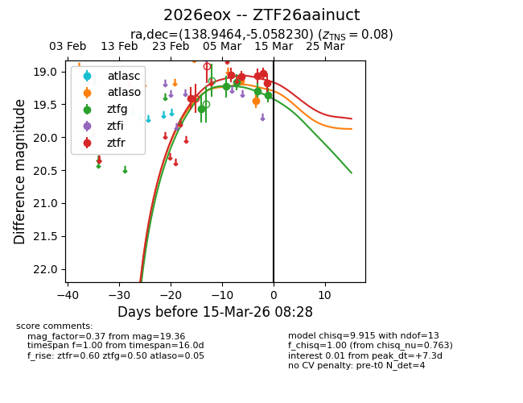
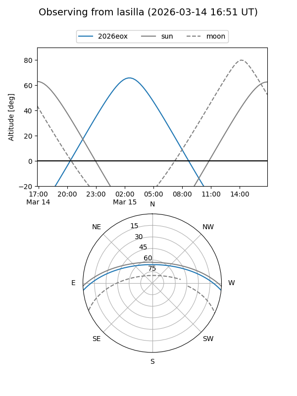
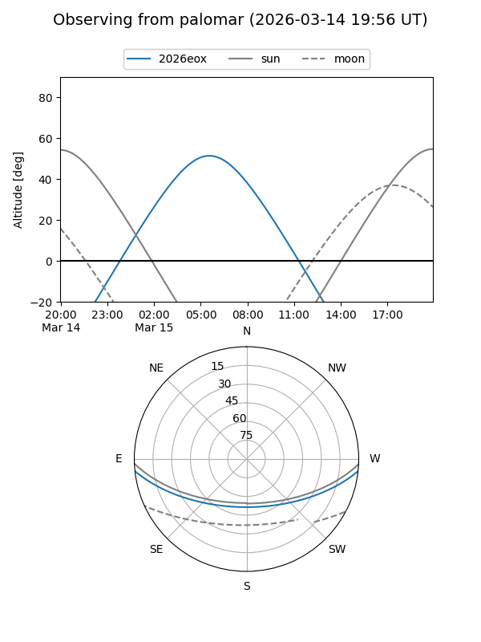
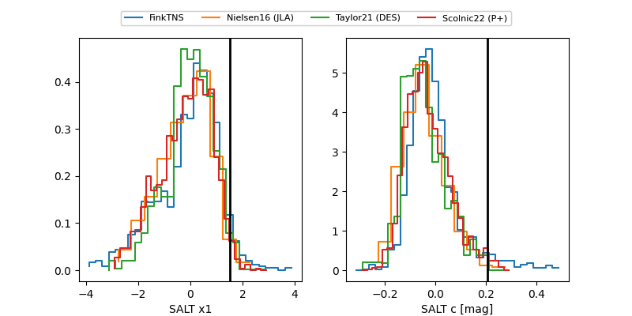

2026eox
Target 2026eox at 2026-03-15 08:30
Aliases and brokers:
FINK: link
Lasair: link
ALeRCE: link
TNS: link
YSE: link
alt names
ZTF26aainuct (ztf,fink_ztf)
2026eox (tns,yse)
Coordinates:
equatorial (ra, dec) = 138.9464,-5.05823
equatorial (HMS+DMS) = 09:15:47.14,-05:03:29.63
galactic (l, b) = (236.1914,+28.81409)
Flags:
confirmed ia
Photometry:
last atlaso=19.44, ztfg=19.36, ztfr=19.17
2 atlaso, 5 ztfg, 6 ztfr detections
Lightcurve

Visibility


Additional plots
